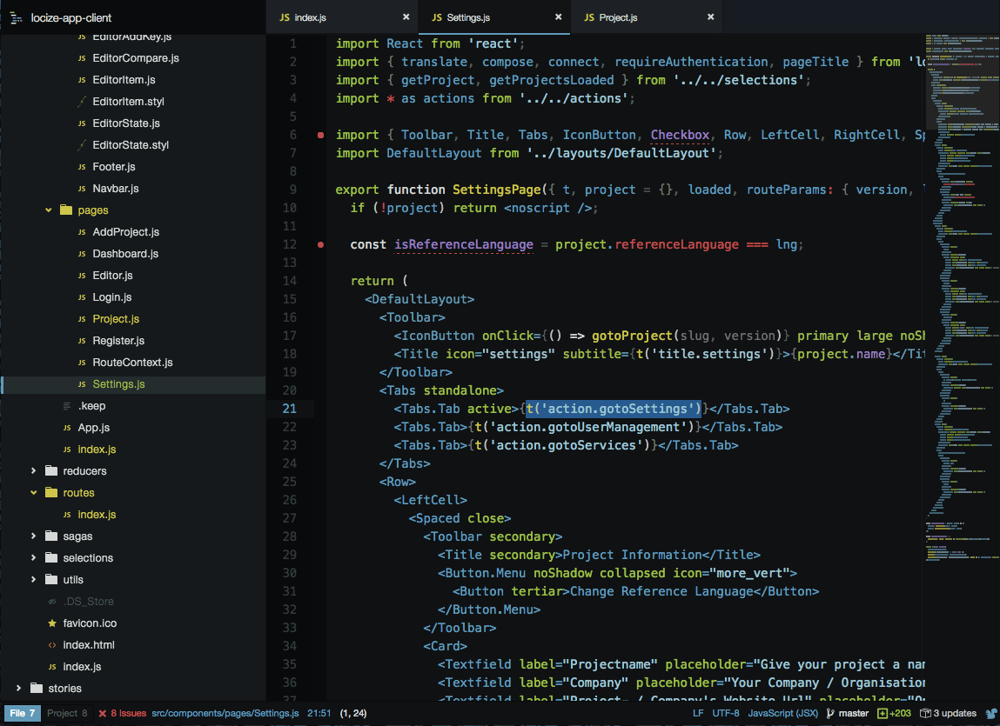
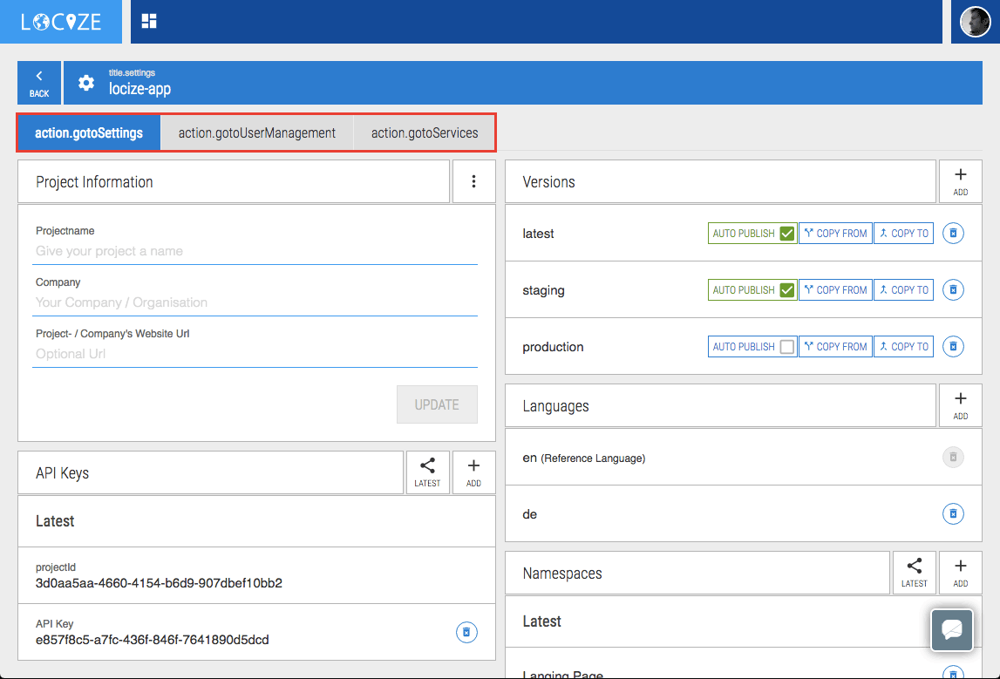
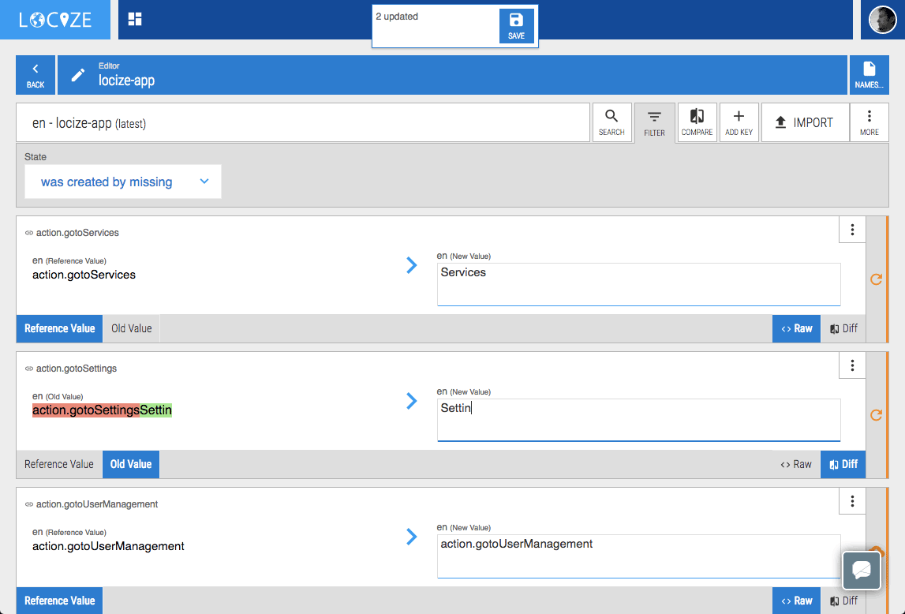
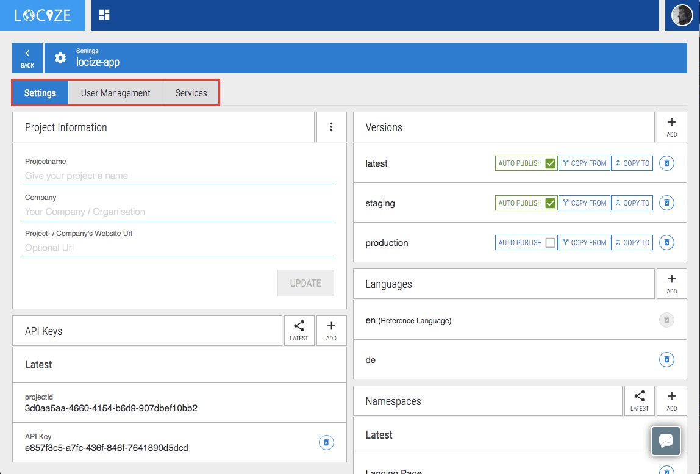

Learn from our experience we made during using the locize service on our own new webapplication.
In an early stage of drafting out our plan to completely rewrite our locize webclient we decided to use our own service to manage the content on it. There was no plan on providing it in another language then english - but we strongly believed even not having the demand of translating we could profit of separating the content from the application logic. This way we could go full speed during development while working on final terminology later. As a plus we could change all the texts in production without having to deploy a new client.
Another reason was - we wanted to get a better feeling on how the experience is - creating a new project using our service. Our goal was to get a workflow that is faster, less error prone and more fun for everyone being part of the localization process.
Our past workflow
To have a comparison with the updated workflow we like to describe how things got done before using locize. If you like to direcly see how things worked with locize just skip this section.
Developers path
- Create a new component, page and get functionality to work
- Replace all texts with instrumented code (calls to translation function)
- Add all the new keys to the correct json file (manually resolving the nesting)
- Restart server to load and serve the new translations files
- See the json has an error -> fix it -> Restart again
- See that some keys are still missing -> add -> Restart again
Technical editor / Translator path
- Ask developer for latest resource files
- Getting them a few days later -> start changing texts to match terminology
- Save the file and pass it back to development
- Ask for new texts - getting only a file having all texts -> going crazy as having no idea which stuff is new...start to compare with last file
- Pass new texts to development
- ...
Poor guys path
- tries to merge files coming from development and technical editor
- Goes crazy and starts searching for a new job ;)
Doing agile / continuous localization could be hard...you can improve this by doing the steps in waterfall manner: development -> technical editor -> translations. But not only takes this a lot longer but also the problems come back as soon as development starts work on next version having semi-finished texts from the technical editor.
Things need to get better - so lets have a look on how our experience was using locize:
Having locize in the flow early
Developing new components / pages we directly instrumented the code. In the early stage we still started with having the texts in code and instrument after being functional working. With getting more used to the new workflow we just removed that step and directly used to call the translation function.

Using webpacks hot-module-reload feature we just needed to save the file and the webapplication did it's reload magic:

This triggered the save missing feature which was enabled during development. So all the untranslated texts were passed automatically to our locize project.
Time to reload the new data on our locize project using the new filter "was created by missing" to only show newly submitted texts:

Just fill the newly added keys with the content it should have - press save - and done. Reload the application and all the new texts are there:

From here the technical editor / translators could change texts as needed and verify those in the test environment completely independent of the development.
- Never ask for resource files again
- Never wait for the new texts / translations to be merged and deployed
- No need to beg your developers to change a text - not even in production
What happened to the poor guy? He was not needed any longer and lost his job before having the chance to search for a new one - just kidding ;)
Separating development and content editing made both sides work more efficient, with less errors and a lot faster. Developers, technical editor and translators could work hand in hand without disturbing each others work.